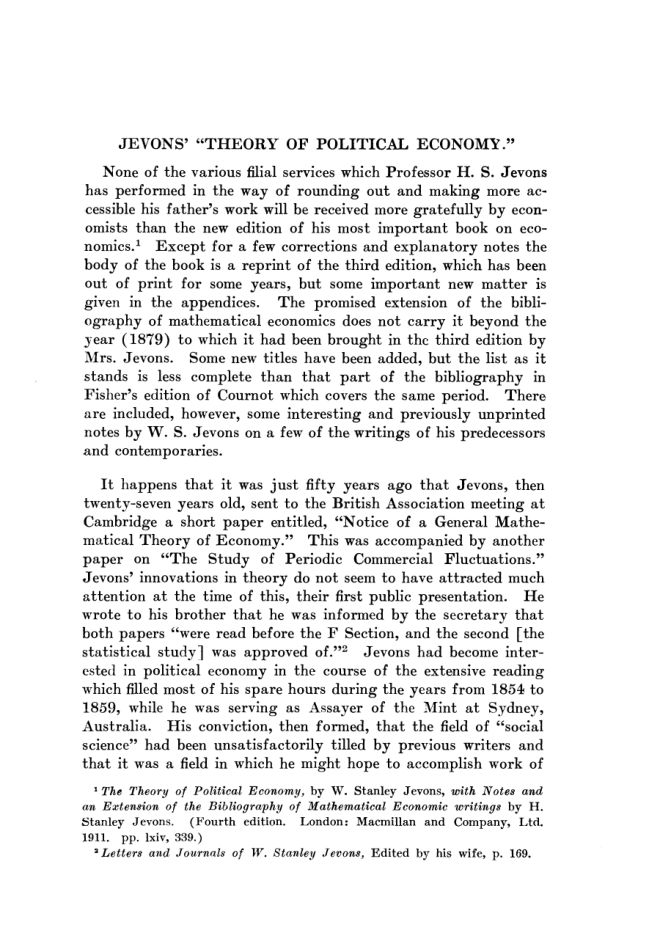

Young, 1912: o que resta da teoria de Jevons?
Leitura: 7 min
Young relê a Theory of Political Economy de Jevons na edição de 1911 e conclui que o livro é desigual, pouco matemático e menos lido do que citado, mas segue entre os grandes do século XIX.


Em 1862, um homem de 27 anos mandou à reunião da British Association, em Cambridge, um texto curto intitulado “Notice of a General Mathematical Theory of Economy”. Junto foi outro, sobre flutuações comerciais periódicas. O secretário informou que ambos foram lidos na seção F e que o segundo, o estatístico, foi aprovado. Do primeiro, nada se disse. O autor era W. Stanley Jevons, e Allyn A. Young, da Washington University, em St. Louis, abre com essa cena sua revisão do livro que daí nasceu.
O pretexto é a quarta edição da Theory of Political Economy, de 1911, organizada pelo filho, H. S. Jevons. O corpo do livro reproduz a terceira edição, com algumas correções e notas, e os apêndices trazem material novo, inclusive notas inéditas de Jevons sobre predecessores e contemporâneos.
De onde veio a teoria?
Jevons se interessou por economia política nas leituras que ocupavam suas horas livres de 1854 a 1859, quando era ensaiador da Casa da Moeda de Sydney, na Austrália. Convencido de que o campo fora mal cultivado, deixou um posto bem pago e voltou à Inglaterra. Em duas cartas de 1860 ao irmão, já anunciava o essencial: uma teoria inteiramente matemática, a lei de que a utilidade da última porção consumida decresce com a quantidade, e uma nova visão do capital e dos juros.
Para Young, as cartas importam menos pelas disputas de prioridade do que por anteciparem quase todo o livro de 1871, que pouco acrescentou a elas. A recepção inglesa foi fria. Em 1874, Jevons escreveu que o que publicara sobre economia matemática recebera pouca ou nenhuma atenção e fora em geral rejeitado ou ridicularizado. Cairnes resenhou o livro com severidade; Marshall, com equilíbrio e sem entusiasmo. No continente, cartas de Walras e outros sustentaram a confiança de Jevons, mesmo quando ele descobriu que Gossen e Dupuit o haviam antecipado.
Com o tempo, a recepção mudou. A reputação de Jevons como lógico, firmada com The Principles of Science, a revolta contra a economia ortodoxa liderada por Thornton e continuada por Cliffe Leslie e Ingram, e a influência crescente do ensino de Marshall em Cambridge deram ao livro uma atenção mais séria. Em 1875, Jevons escreveu a Walras que alguns professores já começavam a apresentar a teoria aos alunos, embora previsse luta, porque os discípulos de J. S. Mill se opunham a qualquer inovação. A segunda edição, a última em vida do autor, saiu em 1879, com a bibliografia de economia matemática e a discussão das dimensões das quantidades econômicas.
O livro é um sistema?
Não, responde Young. O próprio Jevons o descreveu como um esboço elementar de princípios elementares. O livro é coerente, mas desigual: traz elaborações matemáticas tediosas de truísmos na teoria das trocas e, em outro ponto, uma teoria dos juros brilhante e inacabada. Os quatro primeiros capítulos estão mais trabalhados que os quatro últimos, e o prefácio e os três primeiros capítulos são mais conhecidos que o restante.
Young sustenta que a psicologia hedonista de Jevons, a contabilidade de prazeres e dores, não é indispensável à teoria. Wicksteed mostrara que a noção de significância marginal vale também quando instintos e hábitos governam as escolhas, e Pareto separara seu equilíbrio econômico do postulado da utilidade. As teorias de troca e distribuição de Jevons, diz Young, poderiam ser separadas do hedonismo sem alteração essencial.
O que é o grau final de utilidade?
É a contribuição mais famosa do livro. Young explica que o conceito não é idêntico ao de utilidade marginal: é a razão entre o acréscimo de utilidade total e o acréscimo de quantidade na margem, independente da unidade em que o bem é medido. Por isso servia às equações de troca de Jevons, enquanto a utilidade marginal é mais adequada à exposição popular.
O teorema fundamental é que a razão de troca entre dois bens é o inverso da razão entre seus graus finais de utilidade. Young aponta os limites. A troca direta entre dois negociantes é indeterminada, como mostrara Edgeworth; Jevons a torna determinada invocando a lei da indiferença, a de que não há mais de um preço para o mesmo artigo no mesmo mercado, o que equivale a supor uma moeda geral. E o conceito de corpo negociante, que trata todos os moleiros ou todos os padeiros da Inglaterra como um só agente, contorna o problema do mercado geral; tomado ao pé da letra, eliminaria a concorrência.
O que há nos capítulos esquecidos?
A teoria da distribuição. Young observa que só um autor, Cassel, creditara a Jevons a teoria da produtividade marginal dos juros, e que ninguém notara a semelhança de seu diagrama com os usados depois. Há, porém, uma diferença: Jevons definiu o capital como o estoque de subsistência dos trabalhadores e atribuiu a produtividade decrescente ao prazo do investimento, não ao montante. Sua teoria fica, assim, mais próxima da superioridade técnica dos bens presentes de Böhm-Bawerk. A teoria dos salários como resíduo vem de tratar o trabalho como fator fixo e o capital como variável; a possibilidade inversa, diz Young, parece ter-lhe escapado.
O livro é de fato matemático?
Só na superfície. Fora os símbolos, é matemático apenas no sentido em que todo raciocínio sobre quantidades variáveis o é. Cournot confiava nos seus símbolos e chegava, por processos matemáticos, a conclusões que o raciocínio comum não alcançaria; Jevons, que não era matemático hábil, vestia de matemática resultados obtidos por outros meios. O grau final de utilidade, concebido como derivada, é tratado como razão algébrica.
Young subscreve o juízo de Marshall de que “o livro melhoraria se a matemática fosse omitida, mas os diagramas mantidos”. (“the book would be improved if the mathematics were omitted, but the diagrams retained”)
A influência é difícil de isolar da de Walras, Menger, Böhm-Bawerk e Marshall. Na Inglaterra, a filiação é clara em Edgeworth e Wicksteed; na Itália, onde saiu uma tradução em 1875, Jevons pesou por algum tempo; nos Estados Unidos, os austríacos o ofuscaram. Jevons não fez a revolução que queria, e suas ideias foram absorvidas e reconciliadas com a linha ricardiana de um modo que ele não imaginaria.
Ainda assim, conclui Young, “a posição da Theory como um dos quatro ou cinco grandes livros” da economia política inglesa do século XIX “está assegurada”. (“the position of the Theory as one of the four or five great books of nineteenth century English political economy is secure”)
Na minha leitura
Na minha leitura, o ensaio é um exemplo de como separar, num clássico, o que é essencial do que é roupagem. Young retira de Jevons o hedonismo, a ética utilitarista e boa parte da matemática, e mostra que o núcleo, a utilidade na margem e a determinação de razões de troca, sobrevive sem eles. Ao mesmo tempo, identifica o ponto em que a teoria depende de uma hipótese não declarada: a lei de um só preço supõe um mercado com moeda, e não a troca isolada que Jevons dizia analisar.
A observação sobre a matemática também tem alcance de método. Young distingue a matemática que produz resultados novos, como em Cournot, da que apenas reescreve conclusões já obtidas. É uma distinção útil para qualquer leitor de economia formal: a pergunta não é se há equações, mas se elas fazem algum trabalho que o argumento verbal não faria.
Glossário
- Grau final de utilidade
- razão entre o acréscimo de utilidade total e o acréscimo de quantidade na margem, em Jevons.
- Utilidade marginal
- utilidade da última unidade consumida de um bem.
- Lei da indiferença
- princípio de Jevons segundo o qual não pode haver mais de um preço para o mesmo artigo no mesmo mercado e momento.
- Corpo negociante
- termo de Jevons para um grupo de agentes tratado como um só negociante na análise das trocas.
- Hedonismo
- explicação da conduta econômica pela busca de prazer e fuga da dor.
- Superioridade técnica dos bens presentes
- tese de Böhm-Bawerk de que métodos de produção mais longos rendem mais, o que dá aos bens presentes vantagem sobre os futuros.
Fontes
- Jevons' “Theory of Political Economy” — Allyn A. Young (Washington University, St. Louis) (pp. 576–589). JSTOR · Internet Archive (PDF)
- Edição completa, com os demais artigos: Nº 120 do Arquivo.
Documento em domínio público (EUA, publicado antes de 1931), via JSTOR Early Journal Content e Internet Archive. Resumo e comentário do autor deste site, sem afiliação com a American Economic Association. Encontrou um erro? Escreva: a correção é publicada no próprio texto, com data.
← Fisher, 1912: a alta dos preços vai continuar? ↑ Nº 120 · Setembro de 1912: a maré dos preços, o algodão e a tarifa